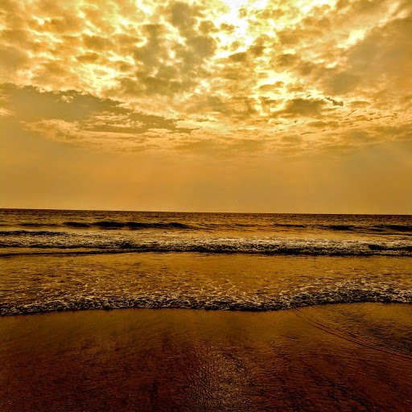

കടൽ
കടൽ എന്നും അവനൊരു പ്രഹേളിക ആയിരുന്നു. ചിലപ്പോൾ ചിരിച്ചുകൊണ്ട് തീരത്തെ തഴുകിയും ചിലപ്പോൾ രൗദ്രമായി തീരത്തെ അക്രമിച്ചുംകൊണ്ടിരുന്നു അത്. നിശബ്ദമായ കടലിന്റെ സംഗീതം അവനു കേൾക്കാമായിരുന്നു. ചിരികൾ പൊഴിയുന്നതുപോലെ അത് ആനന്ദമായിരുന്നു. ചെറുമണൽ തരികളെ ഓരോ തവണ തിരകൾ തലോടുമ്പോഴും ചെറു പരലുകൾ രൂപപ്പെട്ടു.
കടൽ നിഗൂഢമാണെന്നും. അതിന്റെ ആഴവും പരപ്പും അളക്കാൻ ഒരു മനുഷ്യായുസ്സ് മതിയാവില്ലെന്നവനറിയാം. പക്ഷെ, അതിന്റെ സംഗീതം അത്രത്തോളം ആഴമുള്ളതായിരുന്നു. പലപ്പോഴും തീരത്തു വന്നുനിന്നു അവൻ കടലിനോടു എന്തിക്കെയോ ചോദിക്കും, ചിലതിനു അത് മറുപടി കൊടുക്കില്ല, ചിലപ്പോൾ ആർത്തിരമ്പുന്ന തിരകളായി അത് അവനെ പേടിപ്പിച്ചു. ചിലപ്പോൾ വിരസമായ തിരകളെ നോക്കി അവൻ പുലമ്പൽ തുടർന്നപ്പോൾ അവനു ഭ്രാന്താണോ എന്നത് ചിന്തിച്ചിരിക്കാം. തന്റെ വിചിത്രമായ ലോകത്തെ സംഗീതമായി കടൽ എന്നോ മാറിയത് അവൻ പറഞ്ഞില്ല. തീരത്തെ നനുത്ത മണലിൽ പതിഞ്ഞ കാല്പാടുകൾ കടൽ മായ്ചുകളഞ്ഞപ്പോൾ അവൻ ചിരി ഒളിപ്പിച്ചില്ല.
ചിലപ്പോൾ കടൽ എന്തൊക്കെയോ മറയ്ക്കാറുണ്ട്, പക്ഷെ അപ്പോൾ ആണ് അതിന്റെ ആഴം കുറച്ചുകൂടി വ്യക്തമാവുന്നത്. ഒരു ചെറു കുട്ടിയെപ്പോലെ കാറ്റിന്റെ താളത്തിനൊത്തു അത് ചിരിച്ചുകൊണ്ടിരുന്നു. സന്ധ്യയിൽ ചെറു വേദനയുടെ വർണം എടുത്തണിയുമ്പോൾ അവനും ചെറുതായി എന്തിനെന്നില്ലാതെ വേദനിച്ചു. അപ്പോൾ ചെറു തുള്ളികൾ ആ കടലിനോടു ചേരും. രാത്രിയിലും അതിന്റെ സംഗീതം കേൾക്കാൻ കാതോര്ക്കും.
കടൽ പുറത്തായിരുന്നോ ഉള്ളിലായിരുന്നോ എന്നവനറിയില്ല. പക്ഷെ, അത് എന്തൊക്കെയോ ആയിരുന്നു. അത് മനസ്സാവാത്തവർ അവനെ ഭ്രാന്തനെന്നു വിളിച്ചു. തനിക്കു കല്പിച്ചു തന്ന ആ വിചിത്രമായ സ്വാതന്ത്ര്യം അന്ന് മുതൽ അവൻ ആസ്വദിച്ചിരുന്നു. ആ തീരത്ത് ഒരു വിചിത്ര വസ്തു പോലെ. അവിടം ഒരു തുരുത്തായിരുന്നു. അനേകം ആത്മാക്കൾ അലയുന്ന തുരുത്തിൽ അവൻ ഏകാകിയായി.
ഒരു രാത്രി കഴിഞ്ഞപ്പോൾ അവനെ പിന്നെ ആരും ആ തീരത്ത് കണ്ടില്ല. ആ രാത്രി കടൽ വല്ലാതെ തിളങ്ങുന്നത് തോണിയിലിരുന്ന് കണ്ടവരുണ്ട്. പ്രക്ഷുബ്ധമായ കടൽ എന്തിനോ വേണ്ടി തിരയുന്നത് പോലെ തോന്നി. അവൻ എങ്ങോട്ട് പോയെന്നറിയില്ല, ആരും കണ്ടിട്ടില്ല. കാല്പാടുകളൊക്കെ എന്നോ കടൽ മായ്ചുകളഞ്ഞിരുന്നു.